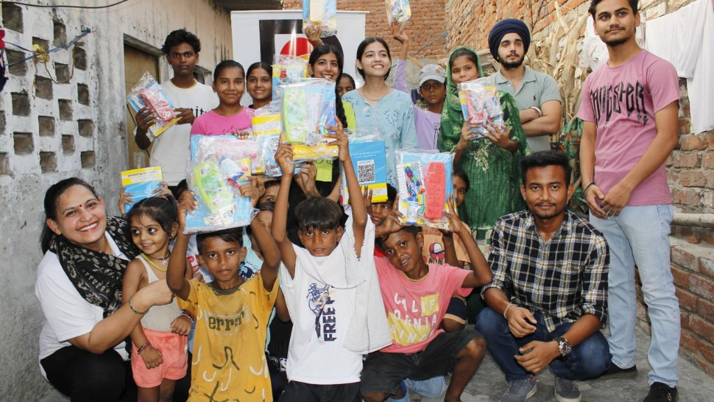
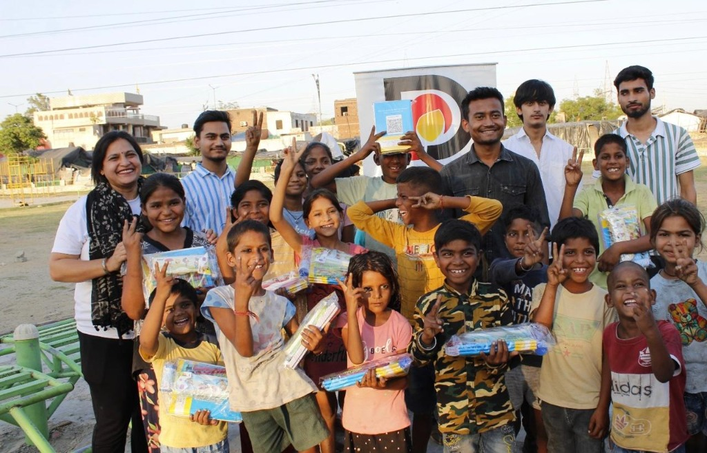

Community Development Volunteer | Crowd Funding Initiative
Volunteered with D V Singh Foundation for Child Development to support a crowdfunding initiative aimed at assisting underprivileged children. Contributed 30+ hours to fundraising efforts, awareness campaigns, and coordination activities, helping generate financial support for children in need. Actively participated in promoting the initiative, engaging with people to spread awareness about the cause, and encouraging community participation in fundraising activities. Collaborated with team members to organize and manage project tasks, ensuring smooth execution of the campaign. This experience strengthened my communication, teamwork, and social responsibility skills while allowing me to contribute to a meaningful community development effort.